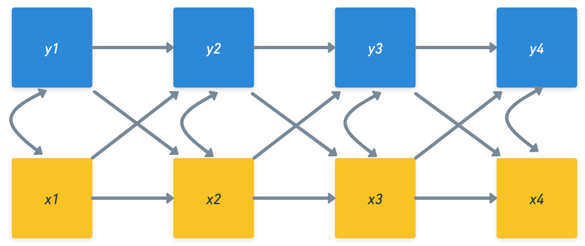

Autoregressive cross-lagged panel models (ARCL) are a statistical techniques used to examine dynamic and reciprocal associations between variables over time. ARCL models can provide insight into the bidirectional relationships between multiple variables over time. These models extend the concept of autoregressive models, which predict a variable based on its prior values, by also integrating cross-lagged effects, thereby capturing the influence of one variable on another in subsequent time points. This dual capability of capturing both autoregressive and cross-lagged effects makes ARCL models a common choice for researchers aiming to understand temporal and reciprocal associations in their data.

Autoregressive Crosslagged Panel 1_Tutorial
When to use Autoregressive Crosslagged Panel Models?
You should consider autoregressive crosslagged panel (ARCL) models in the following situations:
You want to understand: The reciprocal relationships between variables over time.
Your variables: Are repeatedly measured across multiple time points.
You aim to: Disentangle the directional relationship between these variables over successive time intervals.
Getting Started with Autoregressive Crosslagged Panel Models
In this tutorial, we will guide you through an example of an autoregressive crosslagged panel model using a small dataset. By the time you complete this tutorial, you will be equipped to:
Understand the basic principles of autoregressive crosslagged panel models.
Implement these models on longitudinal panel data using R.
Analyze and interpet results from autoregressive crosslagged panel model analysis.
Basic Example
In this tutorial, we will begin by generating a sample dataset directly within R to ensure everyone has the same starting point and can follow along without needing to download or access external files. This generated dataset will serve as our example throughout this tutorial. In your own analyses, you’ll likely start by importing your own data.
The simulated dataset created for this example consists of scores on a single outcome variable (“Job_Satisfaction”) for 500 individuals each measured at four time points: T1-T4.
Subject ID
Time (in years)
Variable 1 (e.g., job satisfaction)
Create Example Dataset
Code
# Setting the seed for reproducibilityset.seed(123)# Setting the number of individuals for our sample datan <-500# Specifying the desired correlation matrix for our datacor_matrix <-matrix(c(1, 0.3, 0.3, 0.3, 0.3, 1, 0.3, 0.3,0.3, 0.3, 1, 0.3,0.3, 0.3, 0.3, 1), nrow=4)# Using Cholesky decomposition to generate correlated datacholesky <-chol(cor_matrix)# Generating correlated random datarandom_data <-matrix(rnorm(n *4), ncol=4)correlated_data <- random_data %*% cholesky# Converting the generated data into a structured data frame in wide formatdata <-data.frame(Individual =1:n,Job_Satisfaction_T1 =round(runif(n, 5, 10)),Job_Satisfaction_T2 =round(runif(n, 5, 10)),Job_Satisfaction_T3 =round(runif(n, 5, 10)),Job_Satisfaction_T4 =round(runif(n, 5, 10)),Life_Satisfaction_T1 =round(correlated_data[,1] *2+7),Life_Satisfaction_T2 =round(correlated_data[,2] *2+7),Life_Satisfaction_T3 =round(correlated_data[,3] *2+7),Life_Satisfaction_T4 =round(correlated_data[,4] *2+7))
View Dataset
Code
head(data)
Model Specification and Estimation
To specify an Autoregressive Crosslagged Panel Model (ARCL), we will utilize the lavaan syntax to focus on understanding the reciprocal influences between multiple variables over time. This approach allows us to discern how a change in one variable at a given time point can influence changes in another variable at subsequent time points, while also accounting for the autoregressive effects of each variable on itself across time.
Install and Load Necessary Libraries
Code
if (!("lavaan"%in%installed.packages())) install.packages("lavaan")library(lavaan)
# Summarizing the modelsummary(fit, fit.measures =TRUE, standardized =TRUE, rsquare =TRUE)
lavaan 0.6.16 ended normally after 12 iterations
Estimator ML
Optimization method NLMINB
Number of model parameters 19
Number of observations 500
Model Test User Model:
Test statistic 110.474
Degrees of freedom 14
P-value (Chi-square) 0.000
Model Test Baseline Model:
Test statistic 214.805
Degrees of freedom 27
P-value 0.000
User Model versus Baseline Model:
Comparative Fit Index (CFI) 0.486
Tucker-Lewis Index (TLI) 0.009
Loglikelihood and Information Criteria:
Loglikelihood user model (H0) -5846.702
Loglikelihood unrestricted model (H1) -5791.465
Akaike (AIC) 11731.404
Bayesian (BIC) 11811.481
Sample-size adjusted Bayesian (SABIC) 11751.174
Root Mean Square Error of Approximation:
RMSEA 0.117
90 Percent confidence interval - lower 0.098
90 Percent confidence interval - upper 0.138
P-value H_0: RMSEA <= 0.050 0.000
P-value H_0: RMSEA >= 0.080 0.999
Standardized Root Mean Square Residual:
SRMR 0.076
Parameter Estimates:
Standard errors Standard
Information Expected
Information saturated (h1) model Structured
Regressions:
Estimate Std.Err z-value P(>|z|) Std.lv Std.all
Job_Satisfaction_T2 ~
Jb_Sts_T1 (a1) -0.042 0.046 -0.925 0.355 -0.042 -0.042
Job_Satisfaction_T3 ~
Jb_Sts_T2 (a2) -0.019 0.044 -0.424 0.672 -0.019 -0.019
Job_Satisfaction_T4 ~
Jb_Sts_T3 (a3) -0.023 0.046 -0.494 0.621 -0.023 -0.022
Life_Satisfaction_T2 ~
Lf_Sts_T1 (a4) 0.246 0.045 5.504 0.000 0.246 0.240
Life_Satisfaction_T3 ~
Lf_Sts_T2 (a5) 0.342 0.044 7.813 0.000 0.342 0.330
Life_Satisfaction_T4 ~
Lf_Sts_T3 (a6) 0.153 0.043 3.533 0.000 0.153 0.156
Job_Satisfaction_T2 ~
Lf_Sts_T1 (b1) -0.042 0.034 -1.246 0.213 -0.042 -0.056
Job_Satisfaction_T3 ~
Lf_Sts_T2 (b2) -0.013 0.033 -0.390 0.697 -0.013 -0.017
Job_Satisfaction_T4 ~
Lf_Sts_T3 (b3) 0.043 0.032 1.321 0.186 0.043 0.059
Life_Satisfaction_T2 ~
Jb_Sts_T1 (b4) -0.001 0.060 -0.009 0.992 -0.001 -0.000
Life_Satisfaction_T3 ~
Jb_Sts_T2 (b5) -0.013 0.059 -0.224 0.822 -0.013 -0.009
Life_Satisfaction_T4 ~
Jb_Sts_T3 (b6) 0.024 0.061 0.392 0.695 0.024 0.017
Covariances:
Estimate Std.Err z-value P(>|z|) Std.lv Std.all
.Job_Satisfaction_T4 ~~
.Lif_Stsfctn_T4 -0.003 0.133 -0.023 0.981 -0.003 -0.001
Variances:
Estimate Std.Err z-value P(>|z|) Std.lv Std.all
.Job_Stsfctn_T2 2.166 0.137 15.811 0.000 2.166 0.996
.Job_Stsfctn_T3 2.144 0.136 15.811 0.000 2.144 0.999
.Job_Stsfctn_T4 2.227 0.141 15.811 0.000 2.227 0.996
.Lif_Stsfctn_T2 3.727 0.236 15.811 0.000 3.727 0.942
.Lif_Stsfctn_T3 3.784 0.239 15.811 0.000 3.784 0.891
.Lif_Stsfctn_T4 3.963 0.251 15.811 0.000 3.963 0.975
R-Square:
Estimate
Job_Stsfctn_T2 0.004
Job_Stsfctn_T3 0.001
Job_Stsfctn_T4 0.004
Lif_Stsfctn_T2 0.058
Lif_Stsfctn_T3 0.109
Lif_Stsfctn_T4 0.025
Code
## Creating variable (names) from output to be used for inline textestimates <-parameterEstimates(fit)Job_Sat_T1 <- estimates[estimates$lhs =="Job_Satisfaction_T1", "est"]Life_Sat_T1 <- estimates[estimates$lhs =="Life_Satisfaction_T1", "est"]JobT2_to_LifeT1 <- estimates$est[estimates$label =="b1"]LifeT2_to_JobT1 <- estimates$est[estimates$label =="a1"]
Interpreting the Results
An Autoregressive cross-lagged panel model (ARCL) was used to explore the reciprocal relationship between Job Satisfaction and Life Satisfaction across multiple time points. This model allows us to understand how past values of a variable can predict its future values and how one variable can influence the future values of another variable.
From the sem output, we can interpret: - Autoregressive paths: How past values of Job Satisfaction and Life Satisfaction predict their future values. - Coefficient for Job Satisfaction from T1 to T2: 2.076064, -0.302096 - Coefficient for Life Satisfaction from T1 to T2: 3.777644 (and so on for other time points) - Cross-lagged paths: How Job Satisfaction influences future values of Life Satisfaction and vice versa. - Coefficient of Job Satisfaction at T1 influencing Life Satisfaction at T2: -0.0424807 - Coefficient of Life Satisfaction at T1 influencing Job Satisfaction at T2: -0.0424257 (and so on for other time points)
Conclusion
The ARCL model provides insights into the dynamic relationship between Job Satisfaction and Life Satisfaction. If the coefficients of the cross-lagged paths are significant, it suggests that there’s a reciprocal influence between the two variables over time. The direction (positive or negative) and magnitude of these coefficients offer further understanding about the strength and nature of this relationship.
Source Code
---title: "Autoregressive Crosslagged Panel Models"author: "Biostatistics Working Group"---## OverviewAutoregressive cross-lagged panel models (ARCL) are a statistical techniques used to examine dynamic and reciprocal associations between variables over time. ARCL models can provide insight into the bidirectional relationships between multiple variables over time. These models extend the concept of autoregressive models, which predict a variable based on its prior values, by also integrating cross-lagged effects, thereby capturing the influence of one variable on another in subsequent time points. This dual capability of capturing both autoregressive and cross-lagged effects makes ARCL models a common choice for researchers aiming to understand temporal and reciprocal associations in their data.### When to use Autoregressive Crosslagged Panel Models?You should consider autoregressive crosslagged panel (ARCL) models in the following situations:1. You want to understand: The reciprocal relationships between variables over time.2. Your variables: Are repeatedly measured across multiple time points.3. You aim to: Disentangle the directional relationship between these variables over successive time intervals.### Getting Started with Autoregressive Crosslagged Panel ModelsIn this tutorial, we will guide you through an example of an autoregressive crosslagged panel model using a small dataset. By the time you complete this tutorial, you will be equipped to:1. Understand the basic principles of autoregressive crosslagged panel models.2. Implement these models on longitudinal panel data using R.3. Analyze and interpet results from autoregressive crosslagged panel model analysis.## Basic ExampleIn this tutorial, we will begin by generating a sample dataset directly within R to ensure everyone has the same starting point and can follow along without needing to download or access external files. This generated dataset will serve as our example throughout this tutorial. In your own analyses, you'll likely start by importing your own data.The simulated dataset created for this example consists of scores on a single outcome variable ("Job_Satisfaction") for 500 individuals each measured at four time points: T1-T4. - Subject ID- Time (in years)- Variable 1 (e.g., job satisfaction)#### Create Example Dataset```{r}# Setting the seed for reproducibilityset.seed(123)# Setting the number of individuals for our sample datan <-500# Specifying the desired correlation matrix for our datacor_matrix <-matrix(c(1, 0.3, 0.3, 0.3, 0.3, 1, 0.3, 0.3,0.3, 0.3, 1, 0.3,0.3, 0.3, 0.3, 1), nrow=4)# Using Cholesky decomposition to generate correlated datacholesky <-chol(cor_matrix)# Generating correlated random datarandom_data <-matrix(rnorm(n *4), ncol=4)correlated_data <- random_data %*% cholesky# Converting the generated data into a structured data frame in wide formatdata <-data.frame(Individual =1:n,Job_Satisfaction_T1 =round(runif(n, 5, 10)),Job_Satisfaction_T2 =round(runif(n, 5, 10)),Job_Satisfaction_T3 =round(runif(n, 5, 10)),Job_Satisfaction_T4 =round(runif(n, 5, 10)),Life_Satisfaction_T1 =round(correlated_data[,1] *2+7),Life_Satisfaction_T2 =round(correlated_data[,2] *2+7),Life_Satisfaction_T3 =round(correlated_data[,3] *2+7),Life_Satisfaction_T4 =round(correlated_data[,4] *2+7))```### View Dataset```{r}head(data)```### Model Specification and EstimationTo specify an Autoregressive Crosslagged Panel Model (ARCL), we will utilize the lavaan syntax to focus on understanding the reciprocal influences between multiple variables over time. This approach allows us to discern how a change in one variable at a given time point can influence changes in another variable at subsequent time points, while also accounting for the autoregressive effects of each variable on itself across time.#### Install and Load Necessary Libraries```{r}if (!("lavaan"%in%installed.packages())) install.packages("lavaan")library(lavaan)```#### Model```{r}model <-' # Autoregressive paths Job_Satisfaction_T2 ~ a1 * Job_Satisfaction_T1 Job_Satisfaction_T3 ~ a2 * Job_Satisfaction_T2 Job_Satisfaction_T4 ~ a3 * Job_Satisfaction_T3 Life_Satisfaction_T2 ~ a4 * Life_Satisfaction_T1 Life_Satisfaction_T3 ~ a5 * Life_Satisfaction_T2 Life_Satisfaction_T4 ~ a6 * Life_Satisfaction_T3 # Cross-lagged paths Job_Satisfaction_T2 ~ b1 * Life_Satisfaction_T1 Job_Satisfaction_T3 ~ b2 * Life_Satisfaction_T2 Job_Satisfaction_T4 ~ b3 * Life_Satisfaction_T3 Life_Satisfaction_T2 ~ b4 * Job_Satisfaction_T1 Life_Satisfaction_T3 ~ b5 * Job_Satisfaction_T2 Life_Satisfaction_T4 ~ b6 * Job_Satisfaction_T3'```#### Fit Model```{r}# Fitting the modelfit <-sem(model, data = data)```#### Model Summary```{r}# Summarizing the modelsummary(fit, fit.measures =TRUE, standardized =TRUE, rsquare =TRUE)``````{r}## Creating variable (names) from output to be used for inline textestimates <-parameterEstimates(fit)Job_Sat_T1 <- estimates[estimates$lhs =="Job_Satisfaction_T1", "est"]Life_Sat_T1 <- estimates[estimates$lhs =="Life_Satisfaction_T1", "est"]JobT2_to_LifeT1 <- estimates$est[estimates$label =="b1"]LifeT2_to_JobT1 <- estimates$est[estimates$label =="a1"]```### Interpreting the ResultsAn Autoregressive cross-lagged panel model (ARCL) was used to explore the reciprocal relationship between Job Satisfaction and Life Satisfaction across multiple time points. This model allows us to understand how past values of a variable can predict its future values and how one variable can influence the future values of another variable.From the `sem` output, we can interpret:- Autoregressive paths: How past values of Job Satisfaction and Life Satisfaction predict their future values. - Coefficient for Job Satisfaction from T1 to T2: `r Job_Sat_T1` - Coefficient for Life Satisfaction from T1 to T2: `r Life_Sat_T1` (and so on for other time points)- Cross-lagged paths: How Job Satisfaction influences future values of Life Satisfaction and vice versa. - Coefficient of Job Satisfaction at T1 influencing Life Satisfaction at T2: `r LifeT2_to_JobT1` - Coefficient of Life Satisfaction at T1 influencing Job Satisfaction at T2: `r JobT2_to_LifeT1` (and so on for other time points)## ConclusionThe ARCL model provides insights into the dynamic relationship between Job Satisfaction and Life Satisfaction. If the coefficients of the cross-lagged paths are significant, it suggests that there's a reciprocal influence between the two variables over time. The direction (positive or negative) and magnitude of these coefficients offer further understanding about the strength and nature of this relationship.